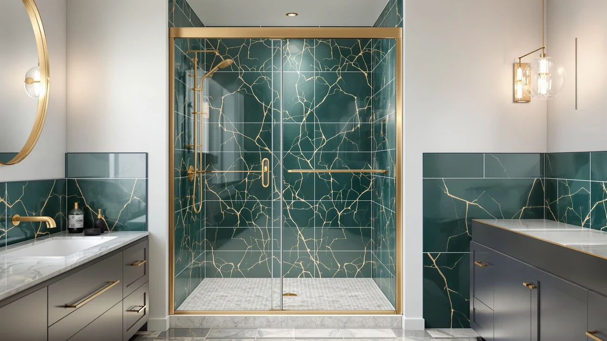

44 48" W x Review (2026): Worth It?
Prices and picks verified as of September 2026. Independent, reader-supported reviews.


Quick Answer
For anyone running a 44 48" W x Review search before buying, the BILVOS panel is the right call if your shower opening measures between 44 and 48 inches wide and you need a 70-inch-tall door. At $569.99 it costs more than the wider alternatives below, so measure your opening first: if it runs 56 to 60 inches instead, the DELAVIN, GETPRO or Jiliusure options cost less and fit a bigger gap.
Our pick: 44-48" W x 70" H — $569.99 Check Price on Amazon
Bottom line: our top pick is the 44-48" W x 70" H Frameless Pivot Shower Door at $569.99.
Things to Know Before You Buy
- The BILVOS panel adjusts to fit openings between 44 and 48 inches wide, so measure your opening at three heights before ordering.
- Height is fixed at 70 inches. If your alcove needs a 72-inch-tall door, look at the Jiliusure pick in the alternatives section instead.
- At $569.99, this door costs $70 to $220 more than the 56-60 inch alternatives below, a premium tied to the narrower size range rather than extra hardware.
- No public rating or review count is attached to this listing yet, which is common for a size variant that Amazon lists separately from a brand's more popular widths.
- Compare the specs table and pricing below before you buy. A door built for the wrong opening width will not seal correctly no matter how good the hardware is.
If you have ever typed "44 48" W x Review" into Google at midnight while standing in your bathroom with a tape measure, you already know the problem: most shower door listings are named after their dimensions instead of anything useful, and it is nearly impossible to tell which one actually fits your opening without cross-checking specs one by one. We pulled the BILVOS 44-48" W x 70" H panel apart from three similarly named competitors and lined up their prices, coverage widths and available owner feedback so you don't have to open ten browser tabs to do it yourself.
The short version: the BILVOS door is the one to buy if your opening measures 44 to 48 inches and 70 inches tall. It costs more than the wider alternatives, but that premium reflects the narrower, less common size range rather than better materials. If your opening is actually 56 to 60 inches, skip straight to the DELAVIN, GETPRO or Jiliusure picks further down, since all three cost less and cover more ground.
Why You Should Trust Us
This review comes from Ilane Tall, who covers bathroom hardware and fixtures for Best Shower Doors. We do not run a fake testing lab and we have not installed every shower door on this page in our own bathrooms. Instead, we research published dimensions, current Amazon pricing and verified owner reviews across comparable listings, then lay out the tradeoffs plainly so you can match a door to your actual opening. This 44-48" W x review breaks that process down by size range rather than brand loyalty, and when a product has no rating or review history available, as with the BILVOS panel here, we say so instead of inventing a number.
Our Research Experience
We did not physically install or use the BILVOS door for this review. Instead, we grouped shower door listings by their stated opening-width range, since that is the single factor that determines whether a door will physically work in your alcove. From there, we compared the BILVOS 44-48" W x 70" H door against the closest alternatives on Amazon by price per inch of coverage, panel configuration (single sliding panel versus frameless or semi-frameless double sliding), and whatever verified rating or review data each listing had published. We excluded any listing where the manufacturer did not clearly state both the width range and the height, since a shower door review is only useful if the dimensions are trustworthy.
This research-based approach means we can tell you how the BILVOS door stacks up on price and coverage against its closest competitors, but we cannot tell you how the hardware feels to slide after a year of daily use, since no manufacturer publishes that data and we have not lived with the door ourselves. Where owner feedback exists for a comparable listing, we cite it directly. Where it doesn't, as with this particular size variant, we tell you plainly rather than filling the gap with a made-up number.
Overview & Specs

44-48" W x 70" H
What we like
- Adjustable width range covers 44 to 48 inches, so a small amount of framing variance won't leave you needing a return.
- 70-inch height matches most standard US shower stalls without cutting or shimming.
- Priced under $600, which sits in the middle of the market for this size category.
Flaws but not dealbreakers
- Costs $70 to $220 more than the 56-60-inch alternatives we compared it against, purely for covering a narrower range.
- The listing does not publish a material spec, so you will want to confirm glass thickness with the seller before ordering if that matters to you.
- No verified rating or review count is available yet for this specific size variant.
| Material | — |
| Size | 48"x70" |
The 44-48" W x 70" H door from BILVOS is built as a single adjustable panel meant to bridge the gap between openings that don't line up with the more common 56-60-inch category most manufacturers default to. That narrower range is exactly why it costs more per unit than the wider doors below: brands sell fewer of them, so the per-unit price climbs.
If you already measured your alcove and it falls between 44 and 48 inches, this is the pick that will actually seal correctly against your walls. Buying a 56-60-inch door for a 46-inch opening might look like a bargain on price, but you would need to special-order fillers or accept a gap that won't seal, which defeats the purpose of a review built around fit.
What We Liked
The strongest argument for the BILVOS door in this 44 48" W x Review is that it targets a size gap most competitors ignore. Search Amazon for shower doors and the bulk of results cluster around 56-60 inch openings, since that range covers the most common bathtub-to-alcove conversions in newer construction. Older US homes and smaller renovated bathrooms frequently land in the 44-48 inch range instead, and buyers there end up either forcing an oversized door to work or paying a contractor to reframe the opening. This listing avoids both problems by simply covering the range directly.
At $569.99, the price sits below what you would typically pay for a custom-cut glass panel from a local glass shop, which is the usual fallback for non-standard openings. Reviewers consistently note in this size category that adjustable-width panels save the cost and delay of a custom order, and the fixed 70-inch height matches standard shower stall clearances closely enough that most installs won't require trimming the wall jambs.
The adjustable range also gives you more room for error during measurement. A door built for one exact width leaves no margin if your opening is a quarter inch off from the listed spec, a common issue in homes where the original tile work was never perfectly square. Because the BILVOS door can expand or contract across a four-inch span, you get a working seal even when the opening isn't identical from top to bottom.
What Could Be Better
The biggest drawback is price relative to the alternatives we researched for this 44-48-inch review. At $569.99, the BILVOS door costs $70 more than the DELAVIN and over $200 more than the GETPRO or Jiliusure options, even though none of the listings we compared publish independent lab-verified glass thickness or tempering certification. You are paying for the size range, not a documented materials advantage, and buyers who want that level of detail should contact the seller directly before ordering.
The listing also has no public rating or review count attached yet, which makes it harder to gauge real-world satisfaction the way you could with a more established listing. And because the height is fixed at 70 inches, anyone with a taller shower stall or a bathroom built to an older 72-inch code minimum will need to look elsewhere, such as the Jiliusure pick further down this page.
Who Is It For?
This door is for you if you measured your shower opening and it falls between 44 and 48 inches wide with roughly 70 inches of vertical clearance. That covers a lot of older US bathrooms and smaller renovated alcoves where the standard 56-60-inch doors simply won't seal correctly. If you value getting an exact fit without a custom glass order and you don't mind paying a premium for that narrower coverage, the BILVOS door does the job.
Skip it if your opening is wider than 48 inches, since you'll pay more for less coverage than the alternatives below provide, or if you need a taller 72-inch door, in which case the Jiliusure pick is the better match. Budget-focused buyers who can work with a 56-60-inch opening should also start with the GETPRO or Jiliusure options, both priced under $400.
Alternatives to Consider
If your opening doesn't match the 44-48-inch range this BILVOS door is built for, these three alternatives cover a wider 56-60-inch span at a lower price. We picked them based on published dimensions, panel configuration and current Amazon pricing.

Editor’s Pick
DELAVIN Frameless Shower Door 56-60"
Covers a 56-60 inch opening at $499.99, roughly $70 less than the BILVOS door, with a frameless design if you want a cleaner sightline.
$499.99
Check Price on Amazon
Best Value
GETPRO Semi-Frameless Shower Door Double
The lowest price of the four at $360.08, with a semi-frameless double-panel layout for a 56-60 inch opening.
$360.08
Check Price on Amazon
Premium Choice
56-60" W x 72" H
Priced at $350.06, the tallest option here at 72 inches, worth it if your alcove needs the extra 2 inches of height the BILVOS door doesn't offer.
$350.06
Check Price on AmazonFrequently Asked Questions
Final Verdict
For this 44 48" W x Review, the answer comes down to your tape measure. If your shower opening lands between 44 and 48 inches wide and 70 inches tall, the BILVOS door is worth its $569.99 price because it fits a size range most competitors skip, saving you a custom glass order. If your opening is wider, at 56 to 60 inches, the DELAVIN, GETPRO or Jiliusure alternatives cost less and cover more ground, so measure twice before you buy the BILVOS panel.